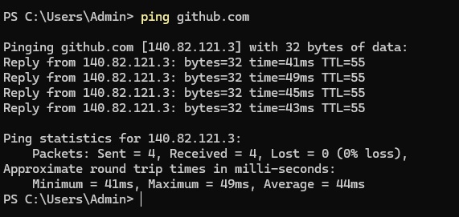

{kind=link}
{kind=link}
Откис сразу после того как я это написал 


Возможно, просто сбой. Слабо верится, что заблокируют гитхаб.
Никогда такого не было и вот опять. Будем наблюдать.
а еще тут говорили что у винды ttl 128, а в линуксе/андройде ttl 64. у вас тоже с винды ведь? может это есть месту быть. странные вещи происходят. ркн репитируют туркменистан, но более тонко и точно
Это первый случай когда у меня гитхаб завис на 10 минут и более. Я им активно пользуюсь и раньше такого не замечал.
Это была винда, не работал гитхаб вообще никак. Запрет не использовал, но впн помогало.
С учетом того что он даже не пинговался я сомневаюсь что запрет помог бы в данном случае.
трассировку делайте в след.раз
Не успел слишком много пока отходил. Я думаю что ещё будет повторятся.
Кажетяс началось…
{kind=link}
Где-то с полчаса назад был такой же пролаг по всей сети, вне зависимости от статуса Запрета и т.д.
Потом сиюминутно откисло обратно всё.
В момент “падения” - не грузило даже обновы софта для роутера (openwrt) . Что характерно- в момент “пролага” Ютуб с YTDisBystro на ПК работал, без -нет, хотя на роутере аналогично имеется.
Кстати так же всё 1в1 могу ток объяснить это тем, что на 100% конфиг @kds не повторить в openwrt. из-за --ipset, это уже отдельно писать скрипт и вставлять в custom.d . Может это повлияло 
у меня просто замедлили, все очень медленно работает и загружает 70-80кб
видимо оборудование “деградировало” 
Сегдоня не открывается gitea
{kind=link}
трасса очень сильно напоминает ту когда не работало вообще ничего, скорее всего мтс а не ркн
gitea не открывается и с впн, так что скорее всего полный отвал?
то же самое, невозможно ничего скачивать с гитхаба быстрее 50-100кбайт/сек, ни запрет, ни гудбай не помогают, зато с варпом все стабильно. билайн, если что
этой проблеме уже несколько лет, не только на билайне, скорее всего такие сервера у гитхаба или маршруты к ним
странно, раньше такого не было. ну, надеюсь так и есть…
Опять ты себя деанонишь прекращай. Я сейчас вообще не представляю как пользоваться интернетом без ВНП или запрета. Пс гит работает.
- First of all, please don’t use PowerShell to curl. The stack overflow problem gives me a headache. The red error message is hard to judge. Use cmd.
- When using curl, bring the https:// protocol header. When entering “curl github.com”, the default is “curl http://github.com:80”.
When using “curl https://github.com”, the default is “curl https://github.com:443”. - I am too familiar with the problem you reported that github cannot be pinged. I am so familiar with it that I suspect Fang Binxing has gone to your place. However, the specific situation is slightly different from the situation faced by GFW. Let’s talk about this next.
GFW has three corresponding solutions for different websites. The first is DNS pollution, the second is SNI blocking, and the third is IP black hole.
In addition to these three conventional processing solutions, it will also perform refined processing on some special websites, such as github steam, which is widely used by everyone. Directly blocking SNI will cause a great response.
They hope to create the illusion that the website can be accessed but is stuck and disconnected. It is a line problem, and put the blame on the website. It will use this method: SNI intermittent packet loss.
Prepare tools
tcping
Detection method
- First resolve the correct github IP address x.x.x.x
There are many ways to obtain it, so I won’t provide them
- Use tcping to continuously perform TCP three-way handshake and four-way handshake on port 443 of the target IP to confirm that there is no packet loss between the local machine and the server where this IP is located
tcping -t x.x.x.x 443
- Then use curl to specify the ip and port to access github
curl -v --resolve github:443:x.x.x.x https://github.com
At this time, observe the tcping window. When “No response” appears, TCP packet loss occurs, indicating that intermittent packet loss is caused by SNI
At this time, the curl command will also be stuck
Method source
The difference is that GFW’s SNI intermittent packet loss only loses TCP packets, and ICMP packets should not be affected, so I’m not sure if your situation is added by TSPU